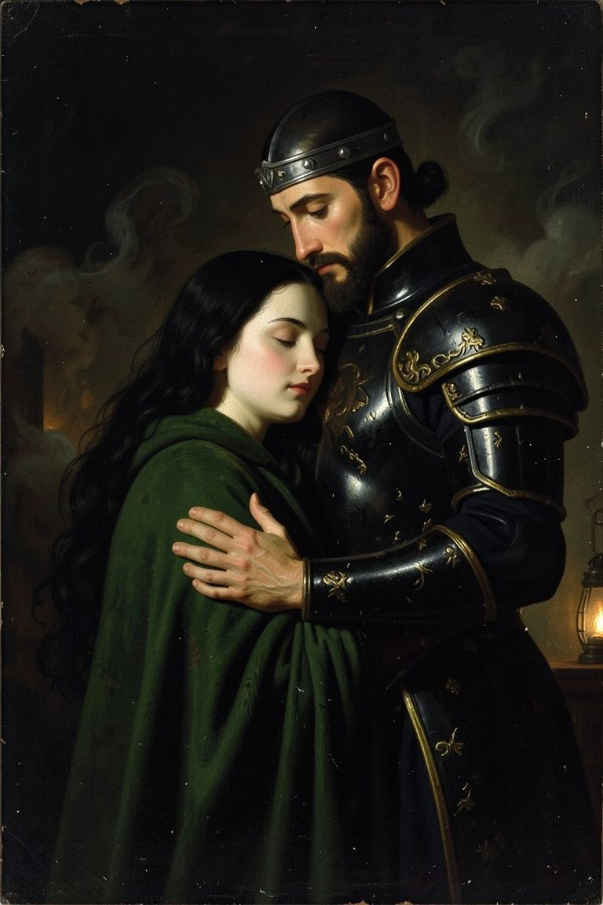
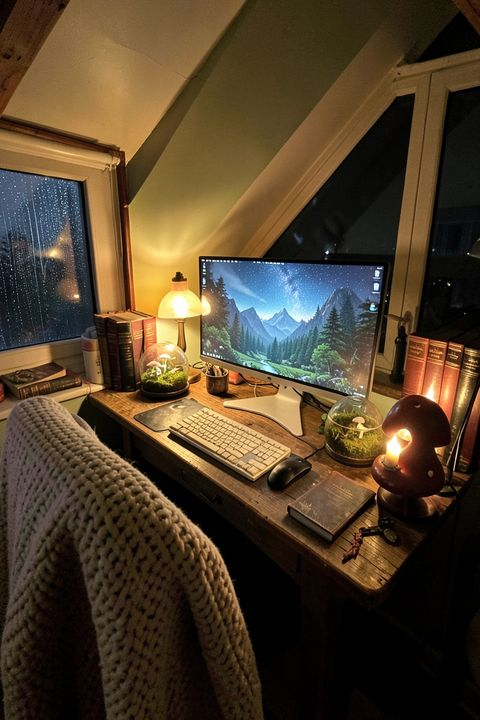
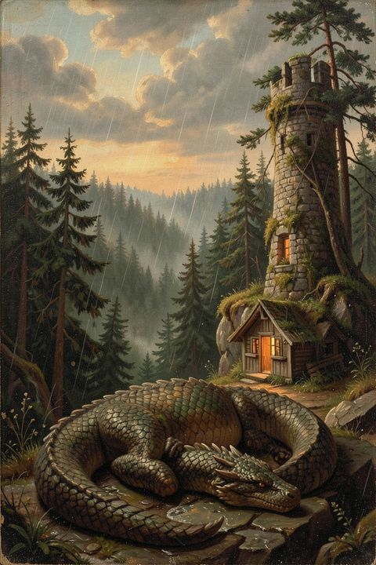

Romantasy & Austen
painted love stories
Original couples built from the tropes we can't stop reading, plus Jane Austen's lovers in oil and candlelight.
See the art
Cozy fantasy hideaways, romantasy art and painted worlds to make your nights in feel like a story.

Three corners of the same quiet evening. Each one is a board on Pinterest, with new art every day.

Original couples built from the tropes we can't stop reading, plus Jane Austen's lovers in oil and candlelight.
See the art
Real-feeling corners to inspire your own: lamps, full shelves, a gentle game, rain outside.
Find your corner
Dragons, tree villages and misty valleys, painted like old storybook plates.
Wander inone more chapter,The Cozy Cursor
then bed
Art you won't find on our Pinterest, made to print at home, tuck into a clear Kindle case or keep on your screen.
The Cozy Cursor is for people who love warm, lived-in places to read, play and dream: a lamp in the window, a full shelf, a story waiting. We share original art and setup ideas, and we're building a small shop of printables and wallpapers.
Our art is original and made with the help of AI image tools, then reviewed before we share it. When we recommend real products, we say clearly when a link may earn us a commission. See our disclosure.